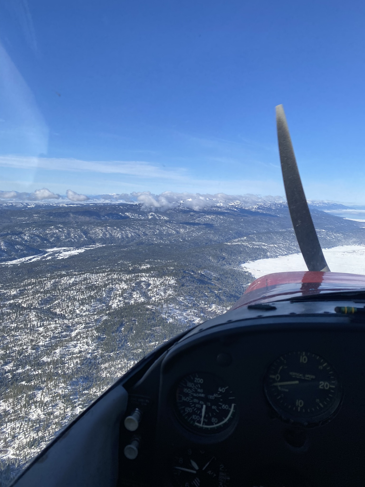

The Portuguese Pilot page on instagram is awesome!
Flying small planes is an exhilarating experience that combines freedom, adventure, and skill. There's something
uniquely special about taking control of a small aircraft and soaring above the landscape. Unlike commercial
aviation, which often feels like a routine and impersonal affair, flying a small plane offers an intimate connection
with the skies. The ability to pilot an aircraft through clouds, navigate around mountain ranges, or simply enjoy
the view from a few thousand feet above the ground is nothing short of magical. The thrill of being the sole person
responsible for the flight, managing the controls, and experiencing the landscape from a bird’s eye view is unlike
anything else.
I like airplanes
One of the most remarkable aspects of flying small planes is the sense of freedom it provides. When you're in the
cockpit, you are in control of your journey, with vast open skies stretching out before you. You have the ability to
chart your course, adjust your altitude, and change your direction on the fly, literally. Whether you’re flying for
fun, travel, or exploration, the open skies offer an unparalleled sense of freedom. It’s a far cry from the rigid
schedules and constraints of commercial flights, where passengers are confined to a pre-determined path, and the
excitement of choice is lost.
Airplanes are interesting
Flying small planes also provides a close connection to the environment. Unlike commercial airliners that cruise
high above the clouds, small aircraft fly at lower altitudes, allowing pilots to experience the nuances of the
landscape. You can spot landmarks, follow rivers, and take in natural wonders like mountain peaks or sprawling
forests from angles that are impossible to see from the ground. For many pilots, it’s not just about reaching a
destination but about the joy of the journey itself. The ability to see and appreciate the world from this unique
perspective deepens one’s connection to the environment, making flying a deeply enriching experience.
Cessna
172
182
210
Piper
Cirrus

I like to fly
The sense of accomplishment that comes with flying small planes is another aspect that makes it so rewarding.
Becoming a licensed pilot is no small feat—it requires dedication, training, and a thorough understanding of
aviation principles. When you take off in a small plane, you’re not just going on a trip; you’re actively applying
everything you’ve learned. The process of planning a flight, performing pre-flight checks, and piloting the aircraft
safely through the skies is a satisfying challenge. The knowledge and skills gained throughout this process give a
sense of personal achievement that is hard to replicate in many other areas of life.
Small planes are coolest
In addition to personal satisfaction, flying small planes fosters a sense of community. Pilots often form close-knit
relationships with others in the aviation world, whether through shared experiences at local airports or group
fly-ins. The aviation community is built on a mutual respect for the art of flying and a shared passion for
aviation. Whether it’s a simple conversation with a fellow pilot on the tarmac or participating in organized fly-in
events, being part of this community adds an element of camaraderie that makes flying small planes even more
Finally, flying small planes offers endless opportunities for adventure and discovery. Whether it’s taking a
cross-country flight to explore a new region, flying to a small, scenic airstrip for a weekend getaway, or
practicing maneuvers in a flight school, every flight holds the potential for a new adventure. Pilots can visit
remote locations, fly to places not easily accessible by car or commercial flight, and create their own itineraries.
This sense of adventure, paired with the thrill of flying, ensures that every time you take off in a small plane,
you’re embarking on a fresh and exciting journey.
Here is a cool Tableau Vizual just for fun! There is also a fun web app here!